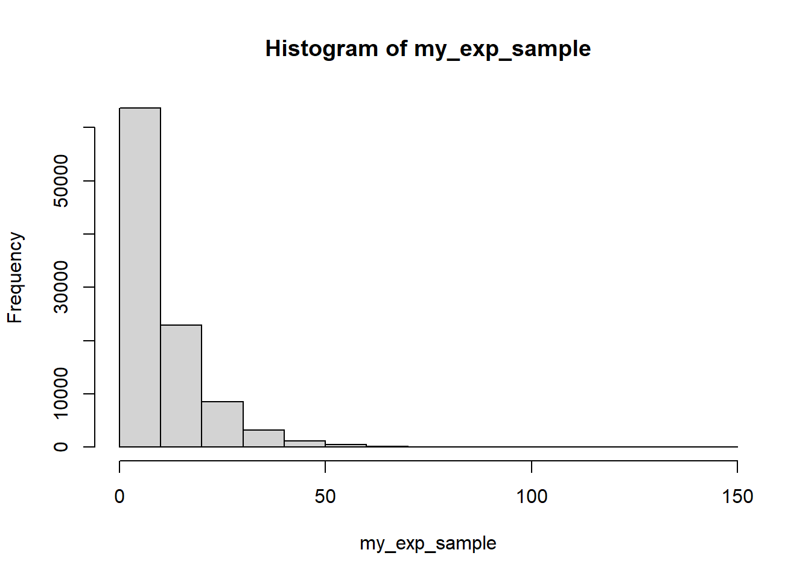
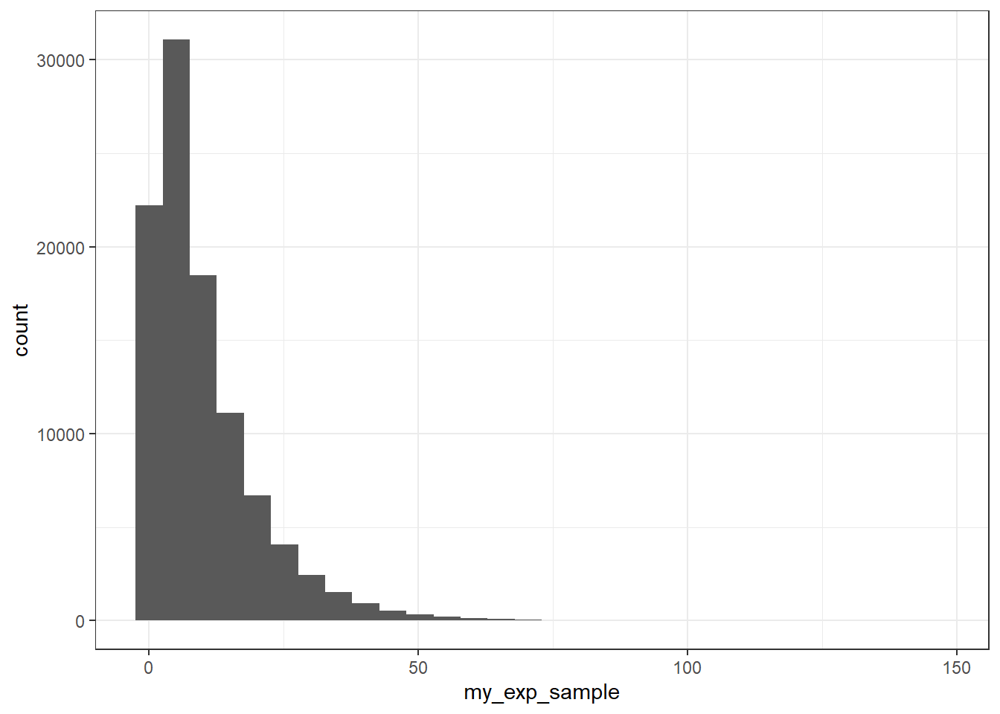
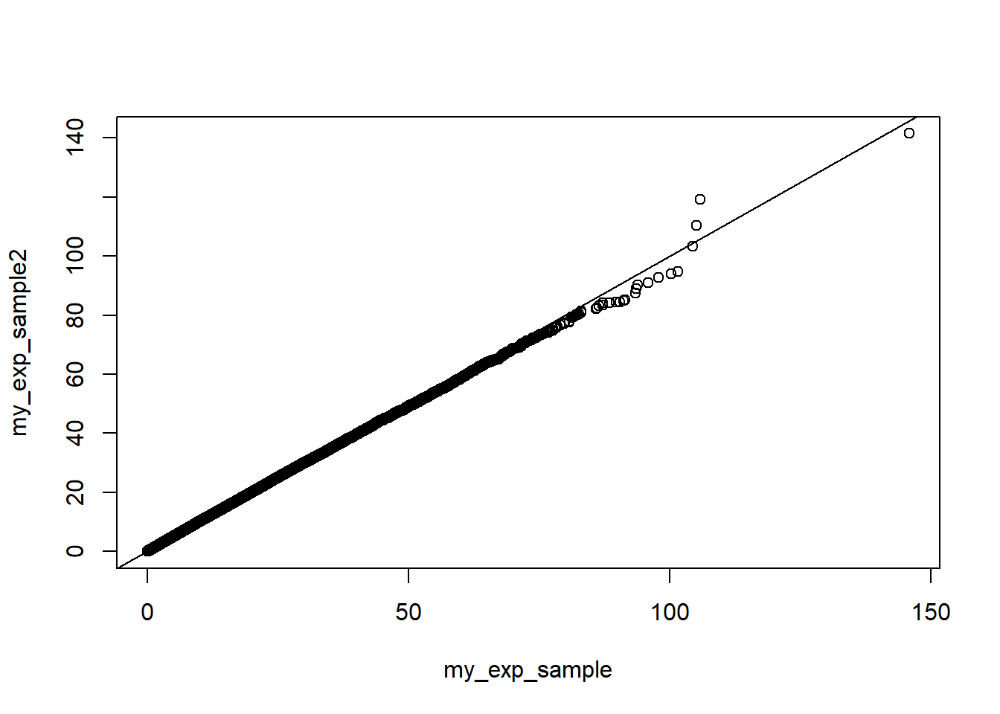
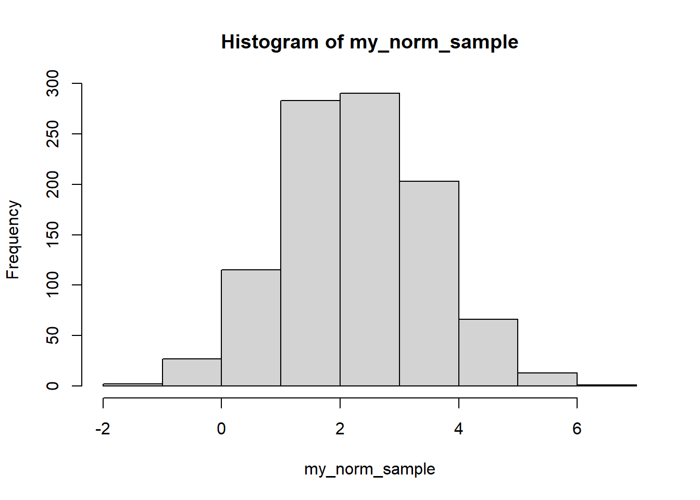
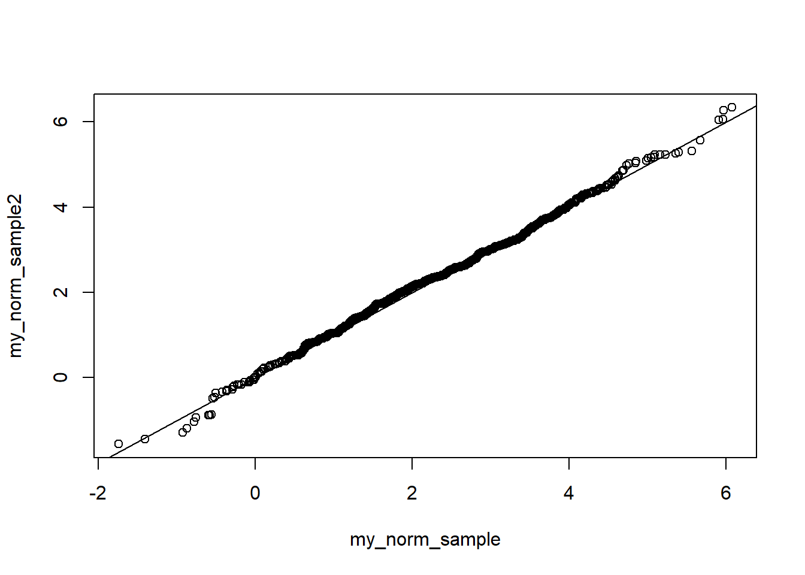

add_two_numbers <- function(number1, number2){
return(number1 + number2)
}
add_two_numbers(number1 = 2, number2 = 9)[1] 11# We can call function without argument names but it is not good practice e.g.
add_two_numbers(2, 9)[1] 11Premise for Inverse CDF method: When you want random samples from a distribution.
Here we use examples from distributions that are easy to sample from so we can compare our results with existing functions. In reality this method would be used for uncommon distributions.
First, let’s recall/introduce how we can make our own functions in in R.
Toy example:
add_two_numbers <- function(number1, number2){
return(number1 + number2)
}
add_two_numbers(number1 = 2, number2 = 9)[1] 11# We can call function without argument names but it is not good practice e.g.
add_two_numbers(2, 9)[1] 11Before we start generating random numbers, let’s set the seed to make our experiments reproducible
set.seed(345454)What is the inverse CDF of an exponential distribution? Uh oh. How can we calculate this? R has functions that compute quantiles, but quantiles return the same value as inverse cdfs.
For example, if \(X \sim Exp(0.1)\), then number \(c\) such that \(Pr(X < c) = 0.6\) is \(F^{-1}(0.6)\) and can be obtained by the following R code
qexp(0.6, rate = 0.1)[1] 9.162907Equipped with this observation, let’s compute
rexp_isi_buds <- function(num_draws, rate = 1){
runif_draws <- runif(num_draws) # Random draws from uniform distirbution
return(qexp(runif_draws, rate = rate)) # Plug draws into cdf
}
my_exp_sample <- rexp_isi_buds(100000, rate = 0.1)We can plot our observations to visually asses that we did it correctly. Note the difference in default bin sizes for the two plotting methods.
# base R plot for reference
hist(my_exp_sample)
# ggplot
library(tidyverse)── Attaching core tidyverse packages ──────────────────────── tidyverse 2.0.0 ──
✔ dplyr 1.1.2 ✔ readr 2.1.4
✔ forcats 1.0.0 ✔ stringr 1.5.0
✔ ggplot2 3.4.2 ✔ tibble 3.2.1
✔ lubridate 1.9.2 ✔ tidyr 1.3.0
✔ purrr 1.0.1
── Conflicts ────────────────────────────────────────── tidyverse_conflicts() ──
✖ dplyr::filter() masks stats::filter()
✖ dplyr::lag() masks stats::lag()
ℹ Use the conflicted package (<http://conflicted.r-lib.org/>) to force all conflicts to become errors
data.frame("my_exp_sample" = my_exp_sample) %>% # Need data frame for ggplot()
ggplot(aes(x = my_exp_sample)) +
geom_histogram() +
theme_bw()# Try changing the number of bins by setting bins = 10`stat_bin()` using `bins = 30`. Pick better value with `binwidth`.
Let’s compare our simulations with simulations produced by the R function rexp()
my_exp_sample2 <- rexp(100000, 0.1)
qqplot(my_exp_sample, my_exp_sample2)
abline(0,1)
We can also compare empirical and theoretical means and standard deviations
# Parentheses tell R to print the value being stored
(emp_exp_mean <- mean(my_exp_sample)) [1] 9.99156(theor_exp_mean <- 1/0.1)[1] 10(emp_exp_sd <- sd(my_exp_sample))[1] 10.07315(theor_exp_sd <- sqrt(1/0.1^2))[1] 10Write a function to generate realizations of a normal random variable with a user specified mean and variance. Compare results of your simulations and simulation produced using rnorm().
rnorm_isi_buds <- function(num_draws, mean = 0, sd = 1){
runif_draws <- runif(num_draws)
return(qnorm(runif_draws, mean = mean, sd = sd))
}
my_norm_sample <- rnorm_isi_buds(1000, mean = 2.3, sd = 1.2)
hist(my_norm_sample)
Let’s compare our simulations with simulations produced by the R function rnorm()
my_norm_sample2 <- rnorm(1000, mean = 2.3 , sd = 1.2)
qqplot(my_norm_sample, my_norm_sample2)
abline(0,1)
We can also compare empirical and theoretical means and standard deviations
(emp_norm_mean <- mean(my_norm_sample))[1] 2.283325(theor_norm_mean <- 2.3)[1] 2.3(emp_norm_sd <- sd(my_norm_sample))[1] 1.221574(theor_sd <- 1.2)[1] 1.2rbernoulli <- function(success_prob){
return_value <- 0
if (runif(1) < success_prob){
return_value <- 1 # else statement is not necessary, because we set return_value to 0 from the start
}
return(return_value)
}Let’s test our function
num_sim <- 1000
my_coins <- numeric(num_sim)
my_prob <- 0.24
for (i in 1:num_sim){
my_coins[i] <- rbernoulli(my_prob)
}
mean(my_coins)[1] 0.245Modify the rbernoulli() function so it has 2 arguments: the number of realizations to draw and success probability
First, using a for loop
rbernoulli_for_loop <- function(num_draws, success_prob){
return_vector <- numeric(num_draws) # Creates a double-precision vector of the specified length with each element equal to 0.
my_unif <- runif(num_draws)
for (i in 1:num_draws) {
if (my_unif[i] < success_prob) {
return_vector[i] <- 1
}
}
return(return_vector)
}Now using vectorized functions
rbernoulli_no_for_loop <- function(num_draws, success_prob){
my_unif <- runif(num_draws)
return_vector <- ifelse(my_unif < success_prob, yes = 1, no = 0)
return(return_vector)
}test_coins1 <- rbernoulli_for_loop(10000, 0.44)
test_coins2 <- rbernoulli_no_for_loop(10000, 0.44)
mean(test_coins1)[1] 0.4391mean(test_coins2)[1] 0.4415Both function definitions work, but R is notoriously slow with loops.
Write a function to simulate from a discrete random variable taking values 1, 2, 3 with probabilities p1, p2, p3, supplied by the user of the function. You could do it with a sample() function, but we don’t want you to use it.
rdiscr3 <- function(p1, p2, p3){
if (abs(1 - p1 - p2 - p3) > 10^-7) { # 10^-7 used to approximate 0
stop("probabilities must add to 1")
}
return_value <- 3
my_unif <- runif(1)
if (my_unif < p1) {
return_value <- 1
} else if (my_unif < p1 + p2) {
return_value <- 2
}
return(return_value)
}The code below should help you test your function. Name your function rdiscr3
test_vector <- numeric(num_sim)
for (i in 1:num_sim) {
test_vector[i] <- rdiscr3(0.1, 0.2, 0.7)
}
# Calculate empirical proportions
sum(ifelse(test_vector == 1, yes = 1, no = 0)) / num_sim[1] 0.105sum(ifelse(test_vector == 2, yes = 1, no = 0)) / num_sim[1] 0.213sum(ifelse(test_vector == 3, yes = 1, no = 0)) / num_sim[1] 0.682